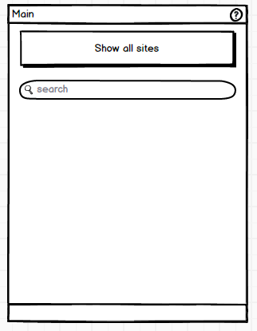

User Documentation
Your user documentation should be constructed as HTML documents, and include screen shots of your program. Images should be in one of the formats: jpeg, gif, png. You should check that your HTML files are rendered correctly on a Unix based machine as well as when using a Windows based browser to ensure they do not contain malformed HTML.(A very common mistake made by Windows users is to use the '\' character as a directory separator when specifying file paths. The HTML standard requires the use of the '/' character instead.) You can check your HTML at http://validator.w3.org. Passing validation at this site is is recommended but not required.
Your user documentation should be constructed as HTML documents, and include screen shots of your program. Images should be in one of the formats: jpeg, gif, png. You should check that your HTML files are rendered correctly on a Unix based machine as well as when using a Windows based browser to ensure they do not contain malformed HTML.(A very common mistake made by Windows users is to use the '\' character as a directory separator when specifying file paths. The HTML standard requires the use of the '/' character instead.) You can check your HTML at http://validator.w3.org. Passing validation at this site is is recommended but not required.